30 mm de fibra de carbono
Cúpula de alta rigidez y una bobina de voz con estructura propia: voces más ricas e instrumentos más definidos.
Tráfico, motores, conversaciones, avisos. Desliza hacia abajo y apágalo. Si vuelves a subir, regresa.
Repartidos entre los dos auriculares, por dentro y por fuera, miden el ruido de tu alrededor en tiempo real.
Siete veces más rápido que el QN1 de los WH-1000XM5. Lo suficiente para bloquear el ruido antes de que llegue.
El Adaptive NC Optimizer corrige la cancelación según el ruido, la presión del aire y cómo los llevas, también con gorro o gafas.
La cancelación de ruido más avanzada de Sony hasta la fecha.
Seis números para entender por qué la sexta generación de la serie 1000X vuelve a ser la referencia de los auriculares de diadema.
Esta página fabrica en tu navegador el ruido de una ciudad (tráfico, motores, murmullo, algún claxon) y pone encima una melodía suave. Cambia de modo y oye qué queda.
Simulación orientativa hecha con Web Audio: no reproduce el procesado real de Sony. Baja el volumen antes de empezar.
Todo entra: el tráfico, el murmullo y la melodía casi enterrada.
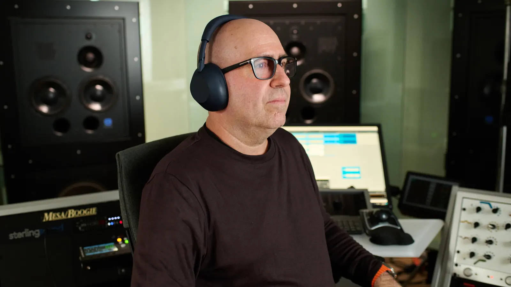
Sony desarrolló los XM6 con ingenieros de masterización ganadores y nominados a los Grammy, de tres de los estudios más importantes del sector: Sterling Sound, Battery Studios y Coast Mastering.
Sterling Sound. Taylor Swift, Adele, Ed Sheeran.
Sterling Sound. Rihanna, Lady Gaga.
Battery Studios. Bob Dylan, Depeche Mode, James Brown.
Coast Mastering. Alicia Keys y las bandas sonoras de Star Wars IV, V y VI.
«Me transportan a un mundo diferente.»Randy Merrill
Cúpula de alta rigidez y una bobina de voz con estructura propia: voces más ricas e instrumentos más definidos.
El QN3 predice y optimiza la cuantificación del ruido en la conversión D/A. Graves más ricos y una escucha más natural.
Hasta 990 kbps por Bluetooth con dispositivos compatibles, y audio de alta resolución también con cable.
Inteligencia artificial en el propio auricular que reconstruye en tiempo real el detalle que se pierde al comprimir.
Convierte el estéreo de 2 canales de una película en sonido espacial, como en una sala.
Ajuste fino en Sony | Sound Connect, Game EQ desarrollado con el equipo de INZONE y Background Music Effect.
Seis micrófonos con beamforming por IA localizan tu voz y un algoritmo de reducción de ruido entrenado con IA aparta el resto, incluso si hay más gente hablando.
con Noise Cancelling. Hasta 40 h sin él.
= 3 horas de música con un cargador USB PD de 9 V / 2,3 A o más.
Del portátil al móvil sin tocar nada: los XM6 cambian solos a la fuente que está sonando.
Latencia ultrabaja para jugar y acceso a retransmisiones compartidas.
¿Batería baja? Enchufa el cable y sigue con tu música.
Ajustan la cancelación y lanzan tu música según la actividad y el lugar. Con Quick Access a tus servicios favoritos.
Cambia entre cancelación y sonido ambiente, silencia el micro y usa Speak-to-Chat para hablar sin quitártelos.
Una sola app para ajustarlo todo. Compatibles con Gemini, el Asistente de Google y Alexa.
Embalaje de Original Blended Material, el papel propio de Sony hecho con bambú, caña de azúcar y papel reciclado. Los auriculares y el estuche usan plástico reciclado en varias piezas.
La novedad más celebrada de esta generación: los XM6 se doblan otra vez y caben en cualquier bolsa.
Fabricadas por inyección de metal para que el plegado siga siendo perfecto con los años.
Más superficie, piel vegana y un ajuste sin presión. Su forma asimétrica distingue izquierda y derecha de un vistazo.
Almohadillas de material elástico que sujetan sin apretar y aíslan del exterior. Se cambian a mano, sin herramientas.
Más compacto y sin cremallera: se abre con una mano y cabe en el bolsillo del asiento del avión.
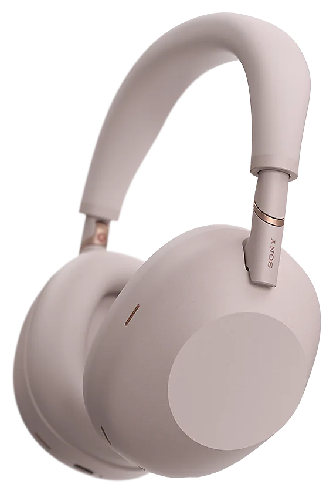
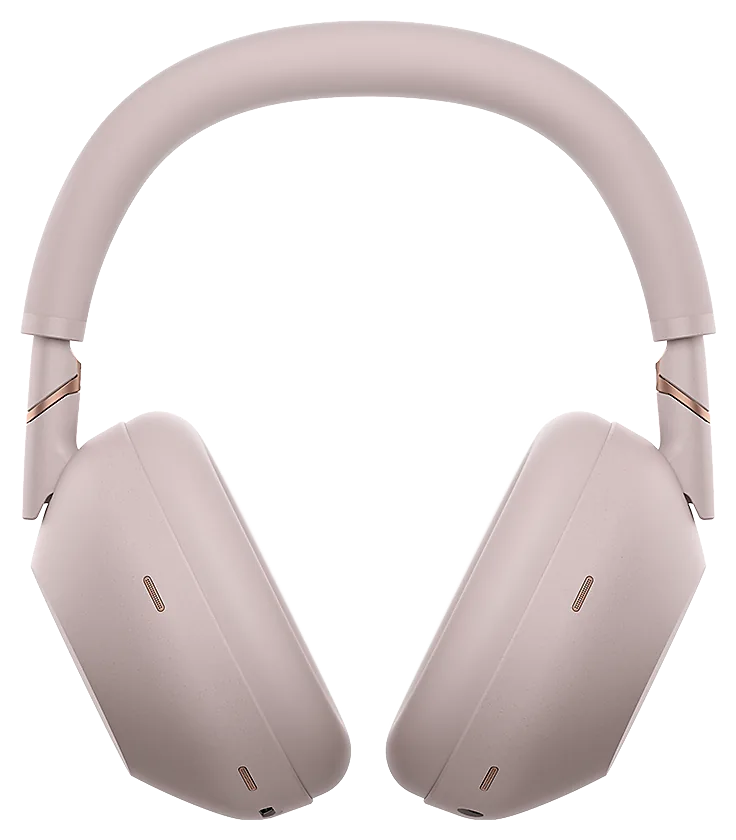
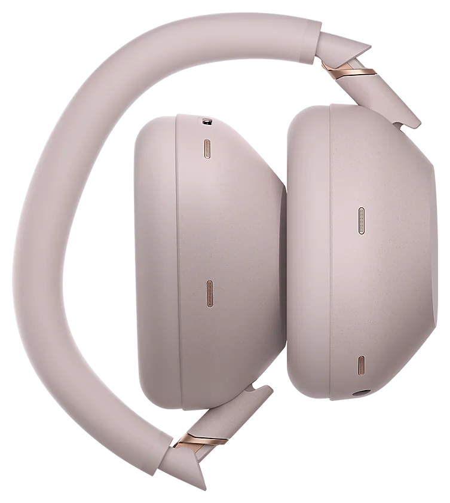
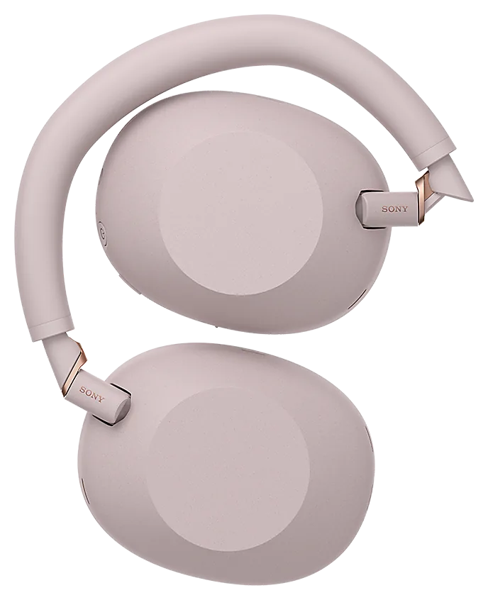
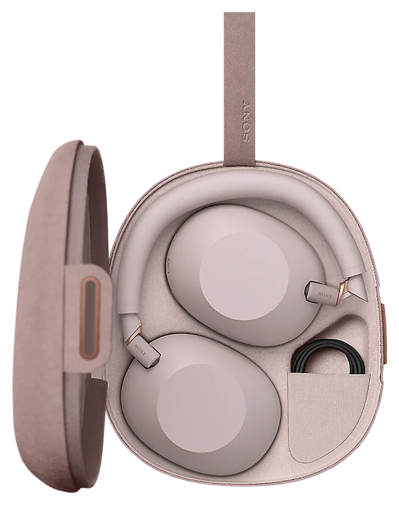
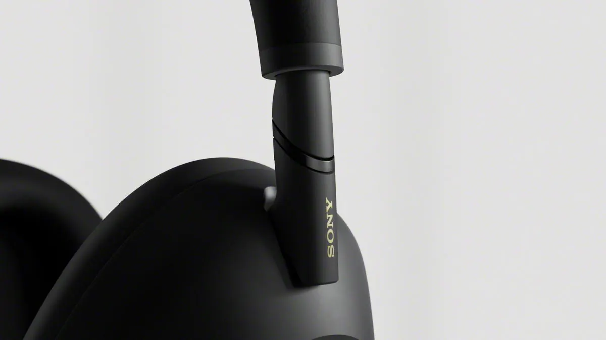
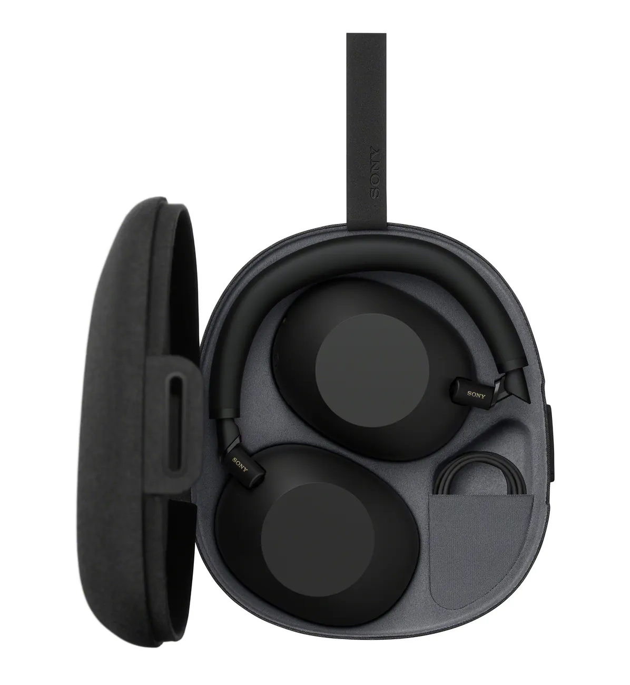
Peso aproximado. Ligeros para un día entero, con la diadema más ancha de la serie repartiendo la presión.
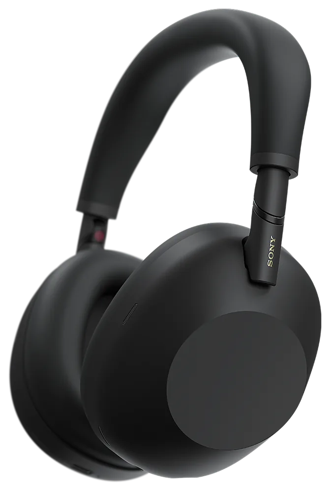
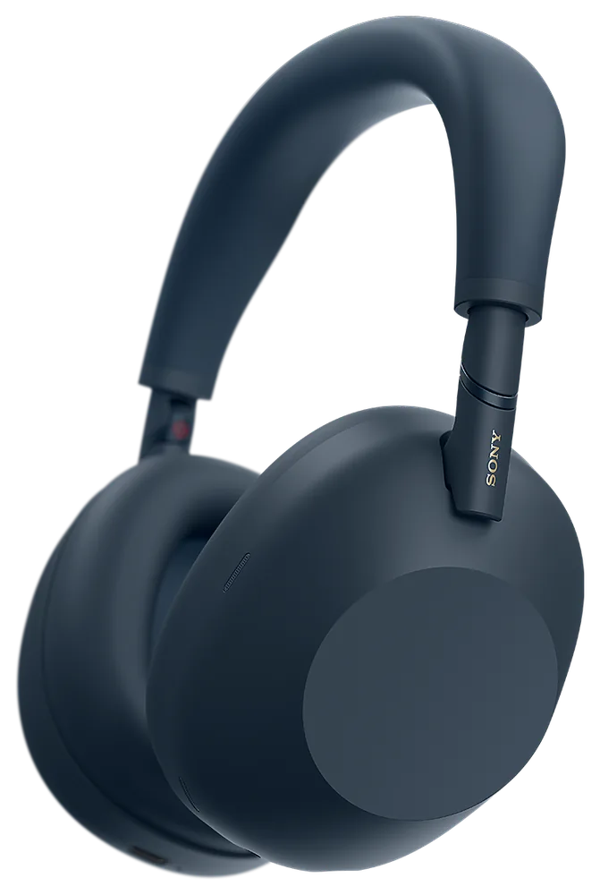
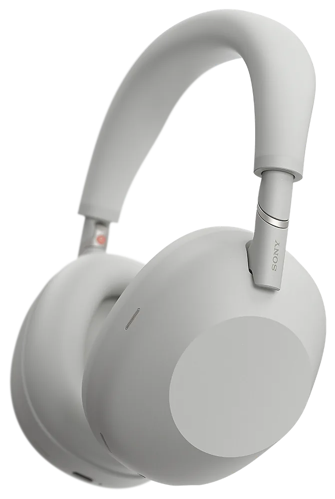

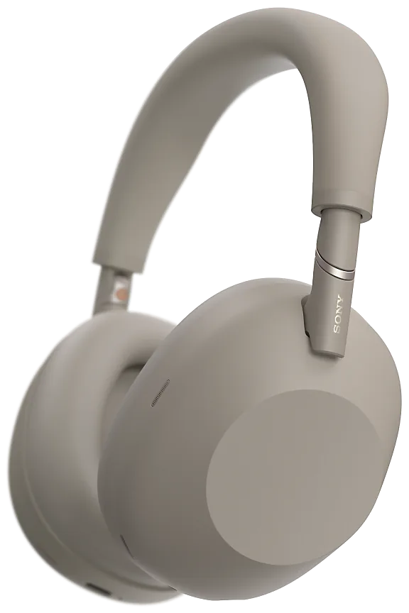
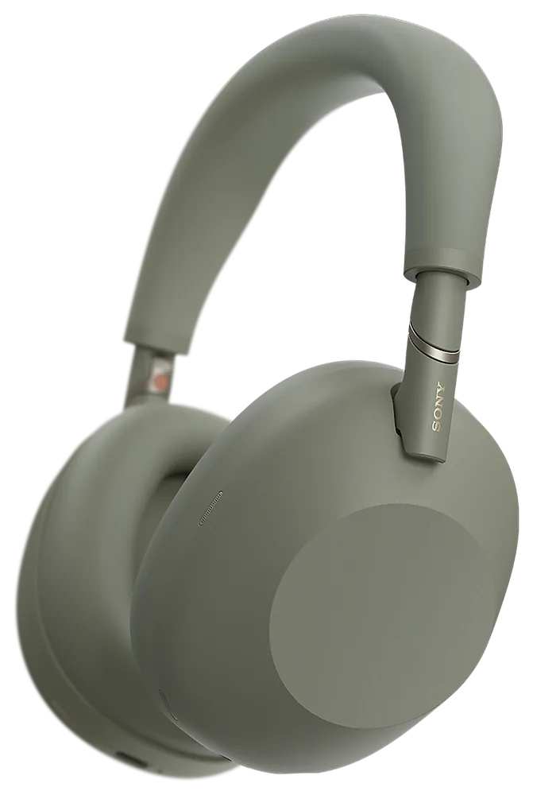
El clásico. Mate, discreto y a juego con todo.
La disponibilidad de cada color depende del país. Gris oliva es el último en llegar.
Fuentes: especificaciones oficiales de Sony y nota de prensa de Sony España (15 de mayo de 2025). Las autonomías dependen de los ajustes y del uso.